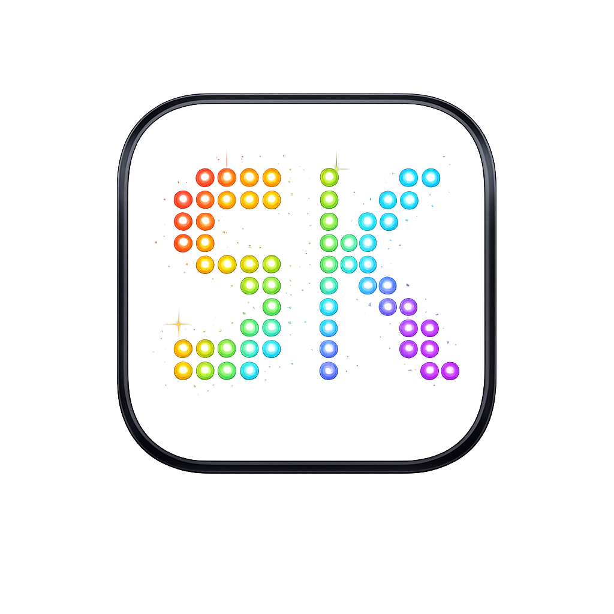

SK LED Circle Calculator
Έκδοση 2.1 · Android & iPhone · Offline
Κύκλος LED
Μήκος LED ταινίας
Διάμετρος κύκλου (cm)
Μήκος LED ταινίας (cm)
Ισχύς LED ταινίας (Watt ανά μέτρο)
Τάση LED
12V
24V
Περιθώριο ισχύος
10%
20%
25%
Διατομή χαλκού
0,50 mm²
0,75 mm²
1,00 mm²
1,50 mm²
2,50 mm²
4,00 mm²
Μήκος καλωδίου (m, μονή διαδρομή)
Υπολογισμός